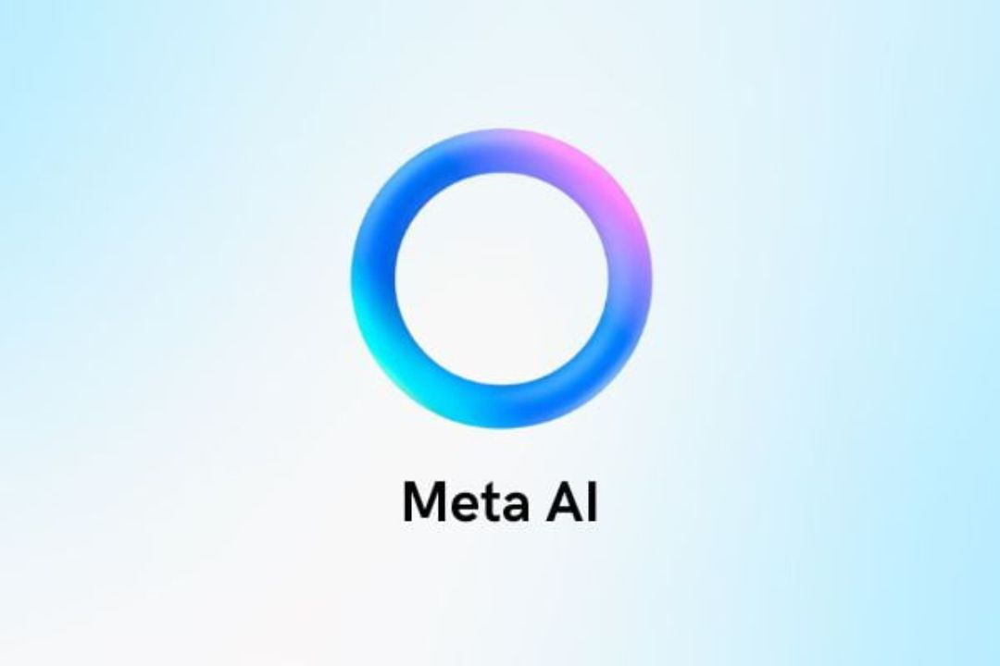

Meta AI is a virtual assistant powered by the Llama 3.1 model. This virtual assistant is available in the Meta family of apps, such as Facebook, Instagram, and Whatsapp, as well as in Meta's smart glasses and the web (you can try it here). Users can interact with Meta AI to ask questions, create images, get coding assistance, edit their writing, and so much more.
Meta AI was initially launched in the United States, where users could communicate with the virtual assistant in English. Soon after, Meta AI was also available in other countries and in other languages. I worked for Meta's gen-AI team (via TEKsystems) to help with the internationalization process.
More specifically, I was a Senior Linguist in the multilingual group within the gen-Ai team, which developed the Llama 3.1 405B model (the multilingual version of the Llama 3.1 model). On this team, I worked primarily with language data in Spanish, prior to launching the Spanish version of the product in LATAM and in the U.S.
In my role, I labeled and evaluated responses to train the model, I analyzed data, and I wrote linguistic reports with findings and suggestions for the engineers. I also did A/B testing to compare the model's performance to the performance of similar models developed by other tech companies (benchmarking).